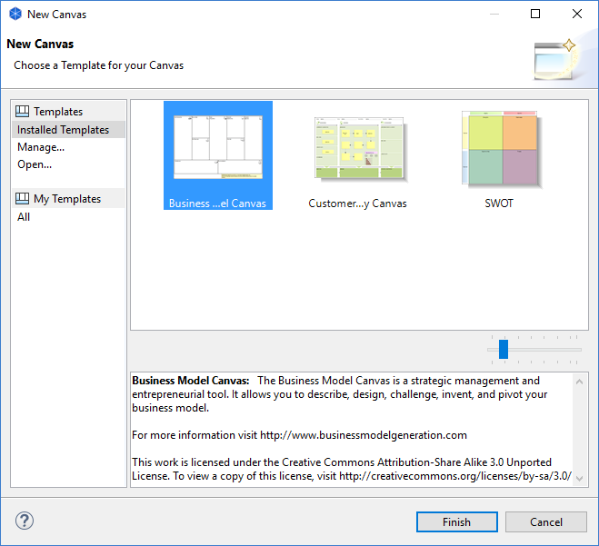

Créer un nouveau canevas à partir d'un modèle
Pour créer un nouveau canevas basé sur un modèle existant se fait en trois étapes:
- Choisir le répertoire "Vues" pour le modèle choisi dans l'arborescence des modèles, faire un clic droit dessus puis choisir "Nouveau->Canevas à partir d'un modèle...". Un assistant va s'ouvrir:

- Choisissez le modèle souhaité. Certains sont fournis dans la section "Modèles installés" tandis que les modèles créés par les utilisateurs sont listés par catégories dans la section "Mes modèles" (voir Enregistrer un canevas en tant que modèle"). Le nom du modèle choisi ainsi que sa description sont affichés dans la fenêtre de prévisualisation de la galerie.
- Vous pouvez redimensionner les vignettes de la galerie en utilisant le widget du curseur de redimensionnement.
- Si vous souhaitez ouvrir un modèle à partir d'un fichier qui n'est pas affiché dans l'assistant, choisissez l'élément "Ouvrir...". Une boîte de dialogue fichier vous permettra de choisir un fichier de modèle ".*archicanvas".
- Appuyez sur Terminer. Un nouveau canevas est créé et ajouté au répertoire "Vues" dans l'arborescence des modèles où vous pouvez modifier le nom par défaut. La vue elle-même va s'ouvrir et est prête à recevoir vos modifications.